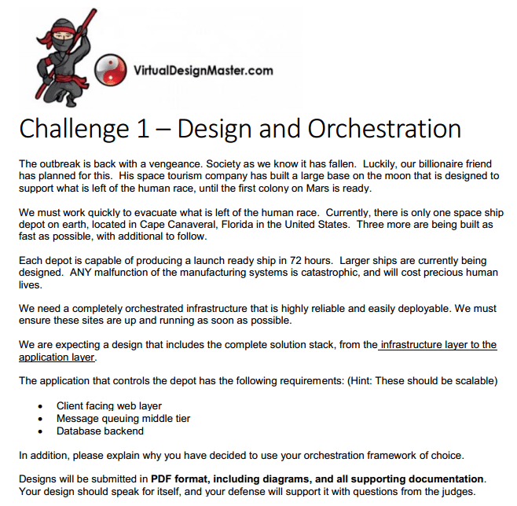
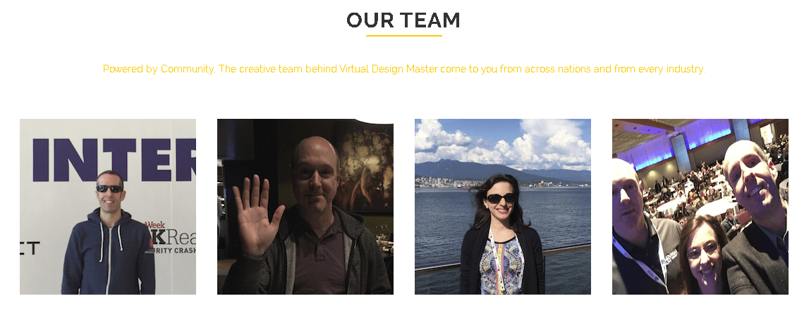

Virtual Design Master 2016
Virtual Design Master 2016Compartilhe esse post nas redes sociais...
Olá Homelabers!
Hoje vou falar sobre um “Concurso” sobre Design e Arquitetura de Sistemas chamado** Virtual Design Master** (VDM).
O VDM estreia a sua quarta temporada no próximo dia 24/06 (sexta-feira agora). E eu serei um dos participantes. :)
Para quem nunca ouviu falar sobre o VDM, é uma competição criada pelos vBloggers Eric Wright (@discoposse) do blog Discopose.com, Angelo Luciani (@AngeloLuciani) do blog Virtuwise e Melissa Palmer a vMiss (@vmiss33) que escreve no blog homônimo vMiss.net.
O VDM é uma competição no estilo de um Reality Show, onde os participantes recebem tarefas, sempre focadas em design e arquitetura de sistemas e tem um tempo determinado para cumprir cada missão, apresentar e defender o seu design a uma banca julgadora. Muitos dizem que é um grande simulado do VCDX (VMware Certified Design Expert), a tão cobiçada (e valorizada) certificação da VMware.
Conheci o VDM no ano passado e acabei assistindo todas as “temporadas”. A coisa é séria. E eu estou bastante ansioso e também nervoso, pois não quero fazer “tão feio”.
As datas dos “episódios” ou fases do programa são as seguintes:
EPISODE 1 - 24/06 - 21hs
EPISODE 2 - 30/06 - 21hs
EPISODE 3 - 07/07 - 21hs
EPISODE 4 - 14/07 - 21hs
EPISODE 5 - GRAND FINALE - 28/07 21hs
Para quem tiver um pouco mais de curiosidade, nesse link, você poderá encontrar o material publicado nas últimas temporadas e sentir o nível dos desafios e da galera que participa. Aqui você pode baixar um pdf de uma das provas, vejam o nível de detalhes (em Inglês).

[embed]https://youtu.be/EAj9k-M79CM[/embed]
É isso ai galera! Torçam por mim e vou atualizando vocês aqui sobre o andamento o “Programa”. Siga o blog no Twitter @homelaber e acompanhe todas as novidades
Quero deixar o meu PARABÉNS ao time que criou essa fantástica competição e coloca seu precioso tempo para organizar e promover o Virtual Design Master.
Eric Wright (@discoposse) | Discopose.com
Angelo Luciani (@AngeloLuciani) | Virtuwise
Melissa Palmer a vMiss (@vmiss33) | vMiss.net

E finalizando, o VDM 2016 é patrocinado pela VMTURBO.
[su_box title=“Virtual Design Master” style=“glass” box_color="#0082ff"] Season 4 26/06 - 28/07 #VirtualDesignMaster http://www.virtualdesignmaster.io @vdmchallenge [/su_box]
Compartilhe esse post nas redes sociais...Valdecir Carvalho
Nerd e pai orgulhoso da Mariana e João. Profissional Sênior de TI com foco em arquitetura de infraestrutura e cloud computing. Blogueiro, podcaster, palestrante, amante de comunidades técnicas, fotógrafo aposentado e adora jogos antigos.
#vExpert · #VMUGLeader · #VUGBrasil · #vBronwBagBrasil · #VeeamVanguard